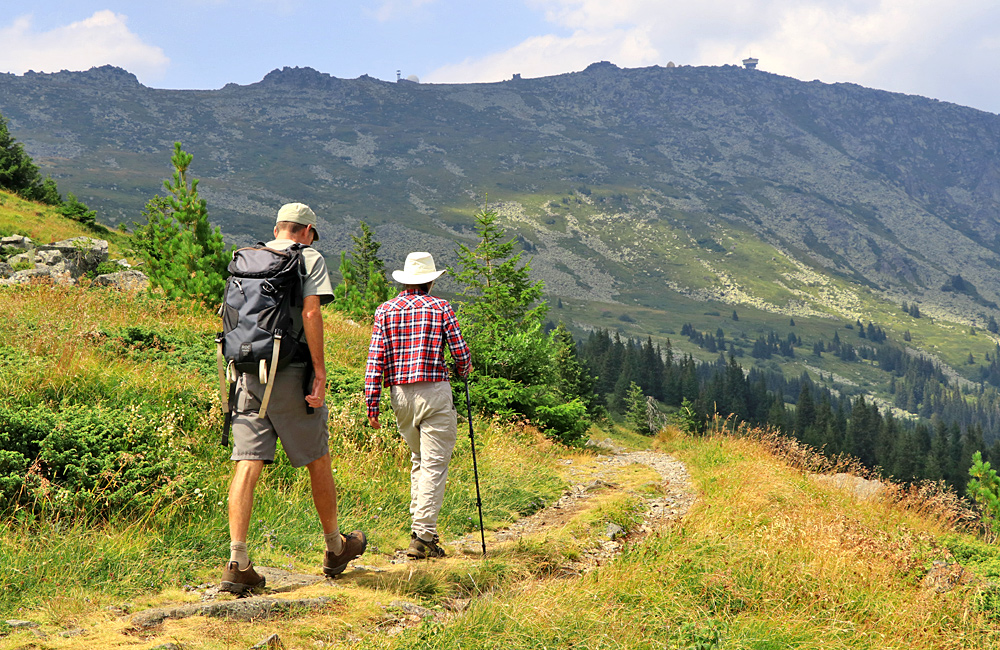

На 4-то място ще ви представим Витошa
Витоша е четвъртата по големина планина у нас. Намира се в Западна България , между Стара планина и Рило-Родопския масив.
Оградена е от Софийска, Пернишка, Самоковска котловина, Плана и Люлин планина. Формата й е куполовидна, втора е по средна надморска височина и първа по посещаемост.
Най-.високият й връх е Черни връх (2290м), следват Голям резен (2277м), Скопарник (2227м), Карачаир (2208м) и др.
Характерни за планината са каменните реки, една от които е Златните мостове. Представляват големи струпвания на скални блокове- те са основна туристическа цел.
Обратно към главната страница